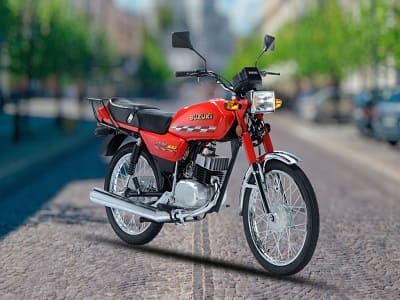
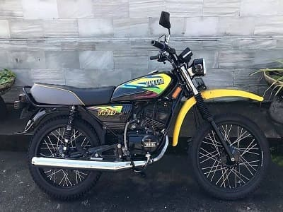
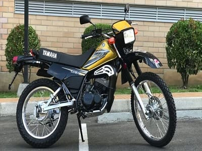

Un motor de dos tiempos es un tipo de motor de combustión interna, que realiza el ciclo termodinámico de funcionamiento en solo dos movimientos del pistón. En este tipo de motor la combustión se realiza en cada vuelta del cigüeñal, a diferencia de un motor de cuatro tiempos, que necesita dos vueltas del cigüeñal para realizarla. Los motores de combustión interna de dos tiempos se utilizan sobre todo en motocicletas y en vehículos de poca cilindrada.
Ventajas✅ y Desventajas❌
| ✅ | ❌ |
| CONSTRUCCIÓN SENCILLA Y ECONÓMICA YA QUE NO POSEE VÁLVULAS. | SON POCO ECOLÓGICOS, YA QUE EL ACEITE EN LA MEZCLA SE QUEMA EN CADA EXPLOSIÓN Y LA EXPULSIÓN DE ESTOS GASES SON ALTAMENTE CONTAMINANTES. |
| ESTOS MOTORES POSEEN MAS POTENCIA QUE LOS MOTORES 4T DEL MISMO CILINDRADO, YA QUE CUMPLEN SU CICLO EN 2 RECORRIDOS Y NO EN 4, BRINDANDO ASÍ MAS EFECTIVIDAD EN LA ACELERACIÓN | EL DESGASTE DE LAS PIEZAS ES MUCHO MAS NOTABLE A MEDIANO PLAZO, SI BIEN EL MANTENIMIENTO ES MAS ECONÓMICO, LA VIDA UTIL Y DURABILIDAD ES MENOR. |
| TRABAJAN A MENORES TEMPERATURAS Y SON MAS LIVIANOS. | AL CONSUMIR ACEITE Y COMBUSTIBLE AL MISMO TIEMPO, LO HACE UN TANTO MAS GASTADOR. |


